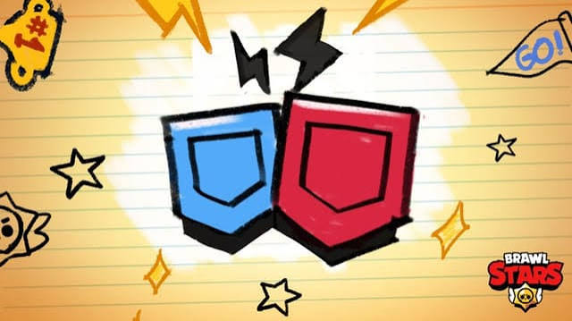
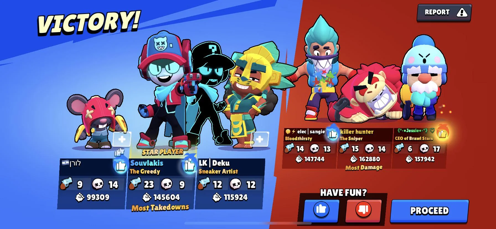
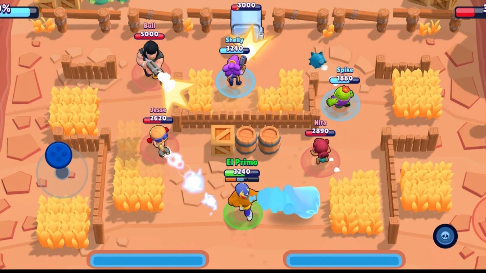
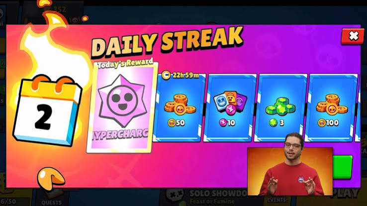
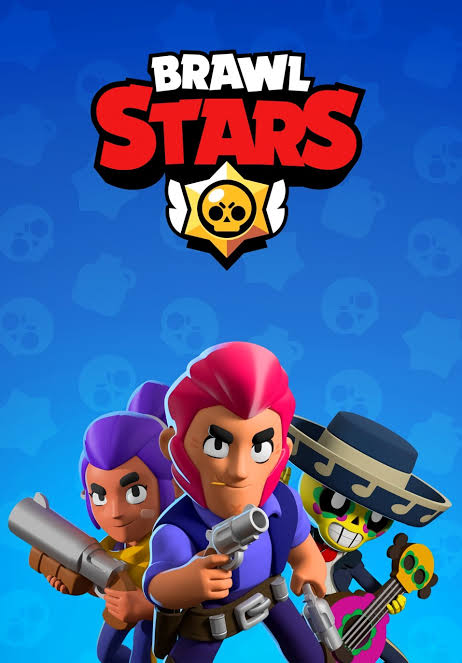
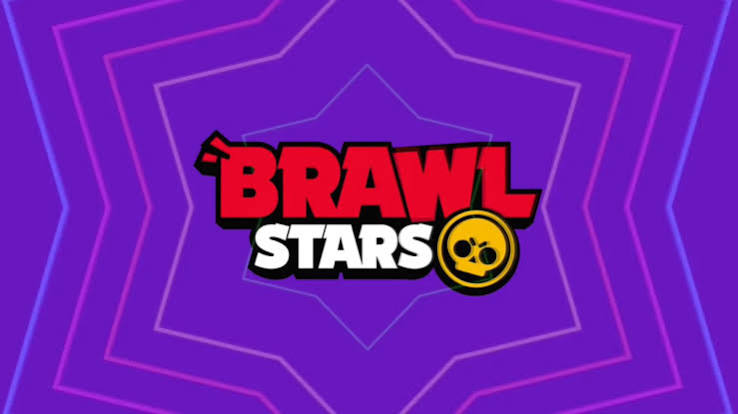

Controles
Para mover su Brawler, arrastre su dedo en el lado izquierdo de la pantalla para manipular el joystick virtual, y su Brawler se moverá
en la dirección en que se tira del joystick. Arrastrar el dedo en el lado derecho de la pantalla manipulará el joystick de ataque.
Arrástrelo para apuntar y suéltelo para disparar. Alternativamente, se puede tocar el joystick para realizar un ataque de "fuego rápido".
Esto hace que el Brawler dispare automáticamente una vez al objetivo más cercano, o si no hay ninguno dentro del alcance, el Brawler
dispara hacia el objeto dañino más cercano (jugadores, cajas de energía, etc.). Para cancelar un disparo dirigido, arrastre el joystick
de ataque hacia su centro.
Cada Brawler tiene su propia "Super habilidad". El Super se carga golpeando a los Brawlers enemigos. Una vez que esté completamente cargada,
se puede utilizar con el joystick amarillo ubicado en el lado derecho de la pantalla, debajo del joystick de ataque. El Super se disparará en
la dirección en la que apunte el joystick. Similar al joystick de ataque básico, el Super joystick también se puede tocar simplemente para
disparar automáticamente el Super al objetivo más cercano. La carga del Super no se pierde si tu Brawler es derrotado. Al igual que su joystick
de ataque, puede cancelar su Super objetivo arrastrando el joystick hacia su centro.
Las posiciones de los controles en la pantalla se pueden ajustar en la configuración del juego.
Se muestran dos "barras de estado" sobre la cabeza de tu Brawler. El de arriba indica cuánta salud le queda al Brawler. La salud se pierde cuando
el Brawler recibe daño, y si la salud del Brawler llega a cero, el Brawler es derrotado. Si el Brawler no ataca ni recibe daño durante 3 segundos,
su salud comenzará a regenerarse con el tiempo. La barra inferior tiene segmentos que indican cuántos ataques tiene preparado el Brawler. La mayoría
de los Brawlers pueden tener un máximo de tres ataques listos a la vez, y cada ataque vacía un segmento completo. Los ataques se regeneran automáticamente
con el tiempo.
Los Brawlers tienen dos habilidades estelares seleccionables, dos gadgets, seis refuerzos (o 7 u 8) y su hipercarga. Las habilidades estelares son
habilidades pasivas que se pueden desbloquear en el nivel de fuerza 9 y los gadgets son habilidades activas de uso ilimitado que se pueden desbloquear
en el nivel de poder 7. Los gadgets tienen un tiempo de reutilización dependiendo que tan fuerte este, durando desde 7 hasta 30 segundos. Los refuerzos
son bonus pasivos que se pueden desbloquear en los niveles de fuerza 8 y 10 y las hipercargas son mejoras que pueden usar los brawlers durante unos segundos
que se desbloquean en el nivel de fuerza 11. Las hipercargas mejoran la velocidad, daño, escudo y una mejora única en el súper de cada brawler. Estas se
cargan como el super, pero a un ritmo más lento y se pueden activar presionando su botón.

Clubes
Los clubes son grupos sociales dentro del juego a los que los jugadores pueden unirse para charlar y unirse a salas para jugar juntos. Los clubes se pueden
crear con 1000 monedas o unirse desde la pestaña Social del juego. Los clubes también tienen sus propias tablas de clasificación basadas en las puntuaciones
Trofeos de los clubes. La puntuación de trofeos de un club se calcula sumando los recuentos de trofeos individuales de los miembros del club. Cada Club
puede tener hasta 30 miembros.

Consejos
Conoce tu rol. Diferentes Brawlers son mejores para diferentes cosas. Por ejemplo, El Primo puede recibir mucho daño y proteger a otros Brawlers
en su equipo, pero Brawlers como Brock son los mejores para el apoyo de largo alcance.
Sepa qué tan rápido viajan los ataques de su Brawler. Si el ataque de tu Brawler tarda un poco en llegar a su destino, debes apuntar delante de tu objetivo si
se está moviendo, o fallarás.
Sepa cuándo retirarse. Los luchadores se curan cuando no disparan ni reciben golpes. Si su salud está baja, puede ser mejor ponerse a cubierto por un tiempo para
recuperar su salud, pero tenga en cuenta que esto también podría darle a su oponente la oportunidad de hacer lo mismo.
Intenta esquivar los ataques enemigos. Si bien los ataques a corta distancia no son fáciles de esquivar, los proyectiles de largo alcance, como el cohete de Brock, se
pueden esquivar con las técnicas de ametrallamiento correctas. Una técnica común es caminar de lado y girar tan pronto como vea que se acerca un ataque a distancia. Debido
a que el enemigo probablemente cronometrará sus ataques apuntando hacia adelante, su ataque fallará.
El hitbox de un Brawler (el área donde los ataques pueden conectarse con él y causar daño) se muestra en el anillo alrededor de sus pies, no en el Brawler en sí. Este anillo
es relativamente del mismo tamaño para todos los Brawler. Hay algunas excepciones de Brawlers con un hitbox un poco más grande, incluidos Pam, 8-BIT, Sandy y todos los pesos pesados.
El hitbox de un Brawler es un poco más grande que un solo bloque de cobertura. Si quieres estar completamente protegido, escóndete detrás de dos bloques.

PELEA
Las batallas se inician en la pestaña Brawl. Hay 10 tipos de eventos principales: Atrapagemas, Supervivencia, Supervivencia Dúo, Supervivencia Trio, Balón Brawl,
Atraco, Caza Estelar, Asedio, Zona restringida y Noqueo, en las que luchas contra otros jugadores. Cada evento tiene un objetivo principal diferente. Consulte
sus páginas individuales para obtener más información.
Pueden estar activos hasta 7 eventos diferentes a la vez. En ese espacio se muestra el tiempo antes de la siguiente rotación de un espacio de evento. Cuando se
alcanza ese tiempo, comienza un nuevo evento y se pueden reclamar 5 XP gratis simplemente tocando el espacio del evento.
Al jugar partidos, obtienes XP, que se utilizan para progresar en el Brawl Pass. El banco de XP puede contener hasta 200 XP a la vez (o 400 si compras el Brawl Pass),
y se vuelven a agregar 20 XP al banco (o 40 XP si compras el Brawl Pass) cada 2 horas y 24 minutos, con un límite de 200 o 400. Si gana toda la XP en el banco,
puede volver más tarde. para ganar más.
El Camino Starr es la forma principal de obtener Brawlers, y se progresa con créditos. Los créditos se pueden obtener en la Tienda, Brawl Pass o Camino de Trofeos.
Cajas
Fueron reemplazadas por los Starr Drops, por tanto, ya no son obtenibles bajo ninguna circunstancia.

Recompensas Diarias
Las recompensas diarias son donde recibes elementos como puntos de fuerza, duplicadores de fichas, monedas, emotes, skins e incluso Brawlers, pero rara vez dan brawlers,
emotes y skins. Las recompensas diarias te las dan cada 24 horas.

